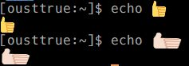

常用エディタをvimに復古するべく環境を整備し始めた。
せっかくなので neovim も試してみる。
環境はWindows10
neovim本家サイトからダウンロード
https://github.com/neovim/neovim/releases
nvim-win32.zip
python3の環境を作る
python36-32を入れた(nvimのバージョンに合わせた)
環境変数PATHに C:/Python36-32 と C:/Python36-32/Scripts を追加
pip install neovim
だいたい動く。
コピペはクリップボード経由で。set clipboard+=unnamed
color emojiは諦める
だいたい動く。
コピペはクリップボード経由で。set clipboard+=unnamed
set termguicolors でフルカラー
意外と良かったが細かいところ(日本語の変換中の表示とか)が使いづらかった。
oni2 作っているらしい。
emoji とか見た目はいい
mintty が良くて、なかなか快適。
Windowsのプロセスを実行する系は諦める(!start . とか)
git とかさくさく動く
もろもろ、パッケージマネージャーで入れるだけなので楽
無ければ、ソースからビルドするのも楽
既にWSLがインストール済みであるところから。 わいは、
https://github.com/yuk7/ArchWSL
入れてる。
minttyのwsl向けのwslttyを使う。
https://github.com/mintty/wsltty
Cicaフォント
xterm-256
color emoji を設定する。
https://github.com/mintty/wsltty/issues/93
%USERPROFILE%\AppData\Roaming\wsltty フォルダに対して作業する

複合文字とか複雑すぎなのでは・・・
足りないパッケージを適宜追加でインストールしながら。
mkdir -p $HOME/local/src
cd $HOME/local/src
git clone https://github.com/neovim/neovim.git
cd neovim
CMAKE_INSTALL_PREFIX=$HOME/local make install # $HOME/local/bin にインストールする
環境変数 PATH に $HOME/local/bin を足した
pip install --user neovim
emoji など難しいマルチバイト文字の入る文書を編集するときは最善でした
clinkを導入して、cmd.exeの苦しさを軽減する(c-p, c-n, tab)
Cica フォントなどを導入することで見た目はいい感じになる
color emojiは諦める(cmd.exeの制約)
一応、 chcp 65001 してから vim で set encoding=utf8
color thema
https://github.com/Microsoft/console/tree/master/tools/ColorTool
ptyが入ったらしい。近々いい感じになりそう。
https://devblogs.microsoft.com/commandline/windows-command-line-introducing-the-windows-pseudo-console-conpty/
F1-F5は何故か、 A, B, C, D, E のキーコードで来る。
普通に、readlineの設定があるのを発見した。
一度だけ、管理者権限でps1の実行許可を設定する必要あり
%USERPROFILE%\Documents\WindowsPowerShell\Microsoft.PowerShell_profile.ps1 を自分で作る
powershellの設定ファイルに下記のように設定すると、 emacs 風コマンドラインになって使いやすくなる。
Set-PSReadlineKeyHandler -Key 'Ctrl+u' -Function BackwardDeleteLine
Set-PSReadlineKeyHandler -Key 'Ctrl+b' -Function BackwardChar
Set-PSReadlineKeyHandler -Key 'Ctrl+f' -Function ForwardChar
Set-PSReadlineKeyHandler -Key 'Ctrl+d' -Function DeleteChar
Set-PSReadlineKeyHandler -Key 'Ctrl+h' -Function BackwardDeleteChar
Set-PSReadlineKeyHandler -Key 'Ctrl+p' -Function HistorySearchBackward
Set-PSReadlineKeyHandler -Key 'Ctrl+n' -Function HistorySearchForward
Set-PSReadlineKeyHandler -Key 'Ctrl+a' -Function BeginningOfLine
Set-PSReadlineKeyHandler -Key 'Ctrl+e' -Function EndOfLine
Set-PSReadlineKeyHandler -Key 'Ctrl+m' -Function AcceptLine
Set-PSReadlineKeyHandler -Key 'Ctrl+k' -Function ForwardDeleteLine